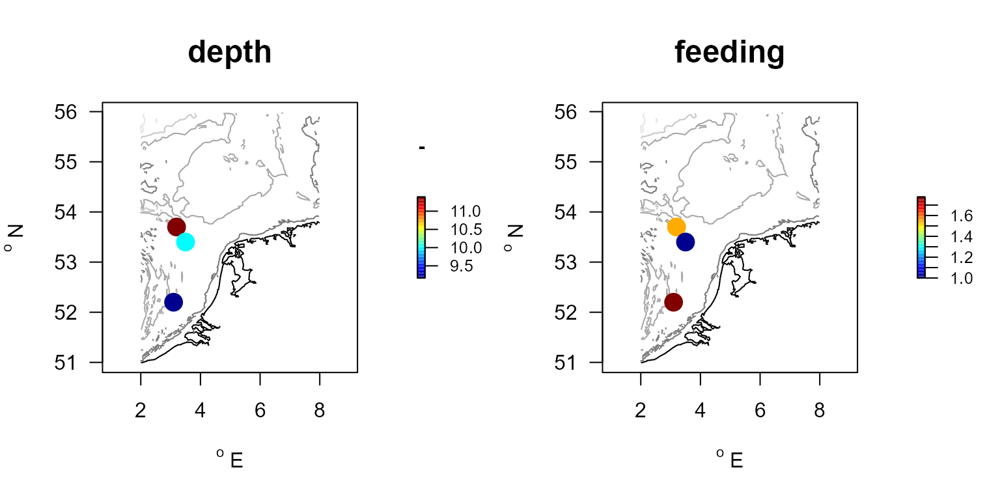

R-package Btrait: working with biological data and trait information
Karline Soetaert and Olivier Beauchard
18 November 2022
Btrait.RmdPackage Btrait
The R-package Btrait contains functions and data sets to work with density data, trait information and taxonomic relationships.
The package contains:
- functions to work with a combination of species-density (or species-biomass) data, species-trait information, and taxonomy
- two data sets with density and biomass data of the macrobenthos in the North Sea.
- several macrobenthos trait databases
Here we explain how to work with the package functions using a small data set.
Another vignette deals with the density and trait databases in the package (vignette (“BtraitData”)). (to trigger this vignette in R, write: vignette (“BtraitData”)).
Density data
Taxon density data record -for a certain taxon- how many individuals are present on a unit surface at a certain place (station). Rather than abundances, also biomasses, i.e. the summed weight of the individuals of that taxon, may be recorded. Typically, but not always, the densities in a certain station will have been estimated several times (i.e. there are replicate measurements).
There are two ways to represent density datasets: in format and in format.
- The long format is most often used to store density data; it has several columns (station, taxon, value, …). This format is special in the sense that absences (0 densities) are NOT represented explicitly in the data. Thus, it is implicitly assumed that, when a taxon is not represented in the data, its density = 0. These implicit absences need to be taken into account when performing calculations with these data.
- In the wide format, each row represents the station (where the data were taken), while the columns represent the taxa (what), and the values are the densities or biomasses. In this format, the absences ARE represented, which make the format suitable for performing calculations. However, each time a new taxon is found in a station, the data of the other stations will also need to be changed (i.e. an extra column with 0 densities added).
A small density dataset
We start with a small density dataset, a data.frame with station, species, and density data, in long format.
In this data set, st.a has been sampled in 2000 and 2001 (i.e. 2 replicates), while st.b was sampled in 2002 only, st.c only in 2003.
Note also that there are two records on species “sp.1” for station “st.a” in 2001. This is not uncommon in density data: perhaps another species was later reassigned to be “sp.1”, or separate measurements (i.e. weighing) were done on two batches of individuals of this species.
S.density <- data.frame(
station = c("st.a","st.a","st.a","st.a","st.a","st.b","st.b","st.b","st.c"),
year = c(2000 , 2000 , 2001 , 2001 , 2001, 2002 , 2002 , 2002 , 2003 ),
species = c("sp.1","sp.2","sp.1","sp.1","sp.4","sp.2","sp.3","sp.4","sp.4"),
density = c( 1, 2, 3, 1, 2, 5, 3, 1, 3)
)| station | year | species | density |
|---|---|---|---|
| st.a | 2000 | sp.1 | 1 |
| st.a | 2000 | sp.2 | 2 |
| st.a | 2001 | sp.1 | 3 |
| st.a | 2001 | sp.1 | 1 |
| st.a | 2001 | sp.4 | 2 |
| st.b | 2002 | sp.2 | 5 |
| st.b | 2002 | sp.3 | 3 |
| st.b | 2002 | sp.4 | 1 |
| st.c | 2003 | sp.4 | 3 |
There are 4 different species in this data set from 3 different stations. Note that not all species are present in all stations. For a certain station, absence of a species in the dataset means their density = 0.
A complete representation of the data would be:
| station | year | species | density |
|---|---|---|---|
| st.a | 2000 | sp.1 | 1 |
| st.a | 2001 | sp.1 | 4 |
| st.a | 2000 | sp.2 | 2 |
| st.a | 2001 | sp.2 | 0 |
| st.a | 2000 | sp.3 | 0 |
| st.a | 2001 | sp.3 | 0 |
| st.a | 2000 | sp.4 | 0 |
| st.a | 2001 | sp.4 | 2 |
| st.b | 2002 | sp.1 | 0 |
| st.b | 2002 | sp.2 | 5 |
| st.b | 2002 | sp.3 | 3 |
| st.b | 2002 | sp.4 | 1 |
| st.c | 2003 | sp.1 | 0 |
| st.c | 2003 | sp.2 | 0 |
| st.c | 2003 | sp.3 | 0 |
| st.c | 2003 | sp.4 | 3 |
The same data, in wide format is:
| station | year | sp.1 | sp.2 | sp.3 | sp.4 |
|---|---|---|---|---|---|
| st.a | 2000 | 1 | 2 | 0 | 0 |
| st.a | 2001 | 4 | 0 | 0 | 2 |
| st.b | 2002 | 0 | 5 | 3 | 1 |
| st.c | 2003 | 0 | 0 | 0 | 3 |
and, averaged over years:
| descriptor | sp.1 | sp.2 | sp.3 | sp.4 |
|---|---|---|---|---|
| st.a | 2.5 | 1 | 0 | 1 |
| st.b | 0.0 | 5 | 3 | 1 |
| st.c | 0.0 | 0 | 0 | 3 |
Taxonomic data
The taxonomy records the relationships between the taxa.
Typically we order taxa in species, genus, family, order, class, and phylum level. For real marine data, this information can be extracted from the world register of marine species, conveniently abbreviated into WoRMS.
In the WoRMS database, each taxon is also assigned a unique identifier (AphiaID). The R-package worms allows to access this database from R.
In Btrait, the taxonomy can be used in several ways:
- to fill in the gaps of the trait information, assuming that closely related taxa will share similar traits, and
- to estimate densities or trait composition on higher taxonomic levels.
In the dataset below, the species belong to 4 genera (“g.1”, “g.2”, “g.3”, “g.4”), 3 families (“f.1”, “f.2”, “f.3”), 2 orders (“o.1”, “o.2”) and 1 class (“c.1”).
S.taxonomy <- data.frame(
species = c("sp.1","sp.2","sp.3","sp.4","sp.5","sp.6"),
genus = c( "g.1", "g.2", "g.3", "g.3", "g.3", "g.4"),
family = c( "f.1", "f.1", "f.2", "f.2", "f.2", "f.3"),
order = c( "o.1", "o.1", "o.2", "o.2", "o.2", "o.2"),
class = c( "c.1", "c.1", "c.1", "c.1", "c.1", "c.1")
)| species | genus | family | order | class |
|---|---|---|---|---|
| sp.1 | g.1 | f.1 | o.1 | c.1 |
| sp.2 | g.2 | f.1 | o.1 | c.1 |
| sp.3 | g.3 | f.2 | o.2 | c.1 |
| sp.4 | g.3 | f.2 | o.2 | c.1 |
| sp.5 | g.3 | f.2 | o.2 | c.1 |
| sp.6 | g.4 | f.3 | o.2 | c.1 |
Trait data (taxa x trait)
Traits assign certain properties to taxa, generally relating to how these taxa affect the ecosystem (these are called “functional effects traits”), or how the taxa deal with their environment and will react to changes in the environment, such as a disturbance (called “response traits”).
There are two ways in which to assign traits to species:
- When in crisp format, each trait is assigned one value per species.
- When traits are in fuzzy format, a species can belong to several modalities within one trait; for each trait the sum of the modality proportions is \(1\).
It is possible to convert traits from fuzzy to crisp format, but the reverse conversion is not unambiguous.
Note that it is customary to store trait data in wide format, where the taxa are the rows, and the trait modalities are the columns.
A fuzzy-coded trait dataset
In the trait dataset (S.traits) inputted below, the species are represented by two traits (T1, T2); these traits have 3 (T1_M1, T1_M2, T1_M3) and 2 modalities (T2_M1, T2_M2) respectively. For instance, trait 1 could be the depth of occurrence of the species, and its modalities “0-5cm”, “5-10cm”, and “10-15cm”; trait 2 could be the feeding type of the species, either “filterfeeding” or “depositfeeding”.
The trait information is stored in a data.frame with the names of the species in the first column, and the membership to each trait modality in the other columns.
Note: information on sp.4 is lacking in the trait database; sp.5 and sp.6 from the trait database are not in the density dataset.
S.traits <- data.frame(
species = c("sp.1","sp.2","sp.3","sp.5","sp.6"),
T1_M1 = c(0 , 0 , 0 , 0.2 , 1),
T1_M2 = c(1 , 0 , 0.5 , 0.3 , 0),
T1_M3 = c(0 , 1 , 0.5 , 0.5 , 0),
T2_M1 = c(0 , 0 , 1 , 0.5 , 1),
T2_M2 = c(1 , 1 , 0 , 0.5 , 0)
)| species | T1_M1 | T1_M2 | T1_M3 | T2_M1 | T2_M2 |
|---|---|---|---|---|---|
| sp.1 | 0.0 | 1.0 | 0.0 | 0.0 | 1.0 |
| sp.2 | 0.0 | 0.0 | 1.0 | 0.0 | 1.0 |
| sp.3 | 0.0 | 0.5 | 0.5 | 1.0 | 0.0 |
| sp.5 | 0.2 | 0.3 | 0.5 | 0.5 | 0.5 |
| sp.6 | 1.0 | 0.0 | 0.0 | 1.0 | 0.0 |
As R has no knowledge on what these traits and modalities mean, a data.frame called S.traits.lab describes the modalities of each trait. Here also a numerical value (score) is assigned to these modalities.
S.traits.lab <- data.frame(
colname =c("T1_M1","T1_M2" ,"T1_M3", "T2_M1", "T2_M2"),
trait =c("depth","depth" ,"depth", "feeding","feeding"),
modality =c("0-5cm","5-10cm","10-15cm","filter", "deposit"),
score =c(2.5 , 7.5 , 12.5 , 1 , 2 )
)| colname | trait | modality | score |
|---|---|---|---|
| T1_M1 | depth | 0-5cm | 2.5 |
| T1_M2 | depth | 5-10cm | 7.5 |
| T1_M3 | depth | 10-15cm | 12.5 |
| T2_M1 | feeding | filter | 1.0 |
| T2_M2 | feeding | deposit | 2.0 |
The trait score is required for recasting the fuzzy traits into crisp format:.
| species | depth | feeding |
|---|---|---|
| sp.1 | 7.5 | 2.0 |
| sp.2 | 12.5 | 2.0 |
| sp.3 | 10.0 | 1.0 |
| sp.5 | 9.0 | 1.5 |
| sp.6 | 2.5 | 1.0 |
A crisp trait dataset
While for traits that are fuzzy coded, one species can belong to different trait modalities, for traits in crisp (binary) format, a species can belong only to ONE modality within one trait.
Thus, a crisp trait data.frame contains only \(0\)s or \(1\)s (or TRUE/FALSE) for ‘binary’ traits. Traits can also have a value for ‘numerical’ traits, but they can also be a factor or character string for ‘categorical’ traits.
Examples of ‘numerical’ traits for a taxon are, e.g. mean biomass, mean longevity, respiration rate. The feeding type to which a taxon belongs is a ‘categorical’ trait.
Here is an example of a crisp trait dataset:
S.traits2 <- data.frame(
species = c("sp.1" ,"sp.2" ,"sp.3" ,"sp.5" ,"sp.6"),
Feeding = c("filter","deposit","deposit","grazer","filter"), # categorical
Longlived = c(TRUE ,TRUE ,FALSE ,FALSE ,TRUE), # binary
Weight = c(0.1 ,0.5 ,5 ,2 ,10 ) # numerical
)| species | Feeding | Longlived | Weight |
|---|---|---|---|
| sp.1 | filter | TRUE | 0.1 |
| sp.2 | deposit | TRUE | 0.5 |
| sp.3 | deposit | FALSE | 5.0 |
| sp.5 | grazer | FALSE | 2.0 |
| sp.6 | filter | TRUE | 10.0 |
This data set in “fuzzy” format needs more columns:
| species | Feeding_deposit | Feeding_filter | Feeding_grazer | Longlived_FALSE | Longlived_TRUE | Weight |
|---|---|---|---|---|---|---|
| sp.1 | 0 | 1 | 0 | 0 | 1 | 0.1 |
| sp.2 | 1 | 0 | 0 | 0 | 1 | 0.5 |
| sp.3 | 1 | 0 | 0 | 1 | 0 | 5.0 |
| sp.5 | 0 | 0 | 1 | 1 | 0 | 2.0 |
| sp.6 | 0 | 1 | 0 | 0 | 1 | 10.0 |
Working with density data using Btrait functions
We now demonstrate how to use the functions from the R-package Btrait to work with a combination of density, taxonomic and trait data
Generating density summaries
We first make two tables, recasting the density data from long into wide format, using function l2wDensity, and where we either keep the years (first example), or we average over the years (2nd example).
with(S.density, # data in long format
l2wDensity(descriptor = data.frame(station, year),
taxon = species,
value = density)
)## station year sp.1 sp.2 sp.3 sp.4
## 1 st.a 2000 1 2 0 0
## 2 st.a 2001 4 0 0 2
## 3 st.b 2002 0 5 3 1
## 4 st.c 2003 0 0 0 3
with(S.density,
l2wDensity(descriptor = station,
averageOver = year,
taxon = species,
value = density)
)## descriptor sp.1 sp.2 sp.3 sp.4
## 1 st.a 2.5 1 0 1
## 2 st.b 0.0 5 3 1
## 3 st.c 0.0 0 0 3The same can be done, but now returning the summaries in long format using the function getDensity:
with(S.density,
getDensity(descriptor = data.frame(station, year),
taxon = species,
value = density)
)## station year taxon value
## 1 st.a 2000 sp.1 1
## 2 st.a 2000 sp.2 2
## 3 st.a 2001 sp.1 4
## 4 st.a 2001 sp.4 2
## 5 st.b 2002 sp.2 5
## 6 st.b 2002 sp.3 3
## 7 st.b 2002 sp.4 1
## 8 st.c 2003 sp.4 3
with(S.density,
getDensity(descriptor = station,
averageOver = year,
taxon = species,
value = density)
)## descriptor taxon value
## 1 st.a sp.1 2.5
## 2 st.a sp.2 1.0
## 3 st.a sp.4 1.0
## 4 st.b sp.2 5.0
## 5 st.b sp.3 3.0
## 6 st.b sp.4 1.0
## 7 st.c sp.4 3.0The Btrait functions to extract densities work as follows:
- first the sum of the value is taken over descriptor x taxon combinations,
- then the average is taken over the vector passed by argument averageOver, taking into account the hidden absences.
Merging density with taxonomic data
Base R has a convenient function to combine (merge) several datasets, based on common information.
We use the merge function to add taxonomic information at a higher taxonomic level to the density data.
In the code below, the density data, at species level is extended with taxonomic information of each species.
When using this function, it is good practice to explicitly specify the name of the column on which we need to merge the two datasets. In our example, the column called “species” is the only column name that both datasets (S.density and S.taxonomy) have in common, so in theory we do not need to specify on which column the merger is done (argument “by”), but here we do this for clarity.
## species station year density genus family order class
## 1 sp.1 st.a 2000 1 g.1 f.1 o.1 c.1
## 2 sp.1 st.a 2001 3 g.1 f.1 o.1 c.1
## 3 sp.1 st.a 2001 1 g.1 f.1 o.1 c.1
## 4 sp.2 st.a 2000 2 g.2 f.1 o.1 c.1
## 5 sp.2 st.b 2002 5 g.2 f.1 o.1 c.1
## 6 sp.3 st.b 2002 3 g.3 f.2 o.2 c.1Once the merge has been done, it is simple to generate tables with densities calculated on higher taxonomic level.
As an example, we create density at family level, taking yearly averages:
with(S.density.tax,
getDensity(descriptor = station,
averageOver = year,
taxon = family,
value = density)
)## descriptor taxon value
## 1 st.a f.1 3.5
## 2 st.a f.2 1.0
## 3 st.b f.1 5.0
## 4 st.b f.2 4.0
## 5 st.c f.2 3.0The merged dataset can also be used to generate summaries based on taxonomic identity. Below we request the summed densities, on family level, for all taxa belonging to a particular order (o.2). We use the argument subset to extract the data
with(S.density.tax,
getDensity(descriptor = station,
averageOver = year,
taxon = family,
subset = (order == "o.2"),
value = density)
)## descriptor taxon value
## 1 st.a f.2 1
## 2 st.b f.2 4
## 3 st.c f.2 3Often we want to keep the names of the input data in the output, which we can achieve by passing the arguments as named lists:
with (S.density.tax,
getDensity(descriptor = list(station=station),
taxon = list(family =family),
averageOver = year,
value = list(density=density))
)## station family density
## 1 st.a f.1 3.5
## 2 st.a f.2 1.0
## 3 st.b f.1 5.0
## 4 st.b f.2 4.0
## 5 st.c f.2 3.0Working with trait data.
From wide to long format
While trait data are conveniently stored in wide format, sometimes it may be easier to look at the trait data in long format. This format can easily be generated from the wide format:
S.traits.long <- w2lTrait(
wide = S.traits,
trait.names = S.traits.lab[,c("trait", "modality")])
S.traits.long[order(S.traits.long$species),]## species trait modality value
## 3 sp.1 depth 5-10cm 1.0
## 12 sp.1 feeding deposit 1.0
## 6 sp.2 depth 10-15cm 1.0
## 13 sp.2 feeding deposit 1.0
## 4 sp.3 depth 5-10cm 0.5
## 7 sp.3 depth 10-15cm 0.5
## 9 sp.3 feeding filter 1.0
## 1 sp.5 depth 0-5cm 0.2
## 5 sp.5 depth 5-10cm 0.3
## 8 sp.5 depth 10-15cm 0.5
## 10 sp.5 feeding filter 0.5
## 14 sp.5 feeding deposit 0.5
## 2 sp.6 depth 0-5cm 1.0
## 11 sp.6 feeding filter 1.0From fuzzy to crisp format
The example trait database (S.traits) is fuzzy-coded, meaning that one trait is represented by several modalities for which a taxon can have partial membership. For instance, trait T1 (depth) for sp.2 can be either expressed as modality M1 or M2, etc…
For summaries it may be more instructive to have one number for each trait, i.e. to represent the trait data in crisp format. To do this, we need to pass the trait.class that each column belongs to, and the score that needs to be assigned to each modality.
S.traits.crisp <- fuzzy2crisp(
trait = S.traits,
trait.class = S.traits.lab$trait,
trait.score = S.traits.lab$score)
knitr::kable(S.traits.crisp,
caption="Data.frame with species traits in crisp format",
align="c", row.names=FALSE)| species | depth | feeding |
|---|---|---|
| sp.1 | 7.5 | 2.0 |
| sp.2 | 12.5 | 2.0 |
| sp.3 | 10.0 | 1.0 |
| sp.5 | 9.0 | 1.5 |
| sp.6 | 2.5 | 1.0 |
From crisp to fuzzy format
It is also possible to cast traits from fuzzy to crisp format:
crisp2fuzzy(S.traits.crisp)## species depth feeding
## 1 sp.1 7.5 2.0
## 2 sp.2 12.5 2.0
## 3 sp.3 10.0 1.0
## 4 sp.5 9.0 1.5
## 5 sp.6 2.5 1.0Extending traits based on taxonomic information
The trait database has information for species “sp.1”, “sp.2”, “sp.3” that are present in our density data, but it lacks data for species “sp.4”.
If we need traits for each species, we can use the taxonomic relationships of the species. For instance “sp.4” belongs to the same genus as “sp.3” and “sp.5”, so “plausible” values for the traits of species “sp.4” can be calculated as the mean of the two other members of the genus.
Using function getTrait, it suffices to pass the taxonomy to do this.
taxaList <- unique(S.density$species)
getTrait( taxon = taxaList,
trait = S.traits,
taxonomy = S.taxonomy)## species T1_M1 T1_M2 T1_M3 T2_M1 T2_M2
## 1 sp.1 0.0 1.0 0.0 0.00 1.00
## 2 sp.2 0.0 0.0 1.0 0.00 1.00
## 3 sp.4 0.1 0.4 0.5 0.75 0.25
## 4 sp.3 0.0 0.5 0.5 1.00 0.00This function proceeds in two steps:
- first the traits are extended with information on higher taxonomic levels (using function extendTrait), provided that information is not yet in the trait database,
- then, for each taxon that is not present in the trait database, the traits on the closest taxonomic level are used. For instance, for an unrecorded species, it is first checked if the trait is known on genus level, if not, family level and so on.
In our case, species “sp.4” belongs to genus “g.3”, so in lack of trait information for “sp.4”, the traits from “g.3” will be used; the latter estimated as the average of traits for species “sp.3” and “sp.5”, for which trait information is known.
S.traits.extended <- extendTrait(
trait = S.traits,
taxonomy = S.taxonomy)
S.traits.extended## species T1_M1 T1_M2 T1_M3 T2_M1 T2_M2
## 1 g.1 0.00 1.0000000 0.0000000 0.0000000 1.0000000
## 2 g.2 0.00 0.0000000 1.0000000 0.0000000 1.0000000
## 3 g.3 0.10 0.4000000 0.5000000 0.7500000 0.2500000
## 4 g.4 1.00 0.0000000 0.0000000 1.0000000 0.0000000
## 5 f.1 0.00 0.5000000 0.5000000 0.0000000 1.0000000
## 6 f.2 0.10 0.4000000 0.5000000 0.7500000 0.2500000
## 7 f.3 1.00 0.0000000 0.0000000 1.0000000 0.0000000
## 8 o.1 0.00 0.5000000 0.5000000 0.0000000 1.0000000
## 9 o.2 0.40 0.2666667 0.3333333 0.8333333 0.1666667
## 10 c.1 0.24 0.3600000 0.4000000 0.5000000 0.5000000
getTrait( taxon = unique(S.density$species),
trait = rbind(S.traits, S.traits.extended),
taxonomy = S.taxonomy)## species T1_M1 T1_M2 T1_M3 T2_M1 T2_M2
## 1 sp.1 0.0 1.0 0.0 0.00 1.00
## 2 sp.2 0.0 0.0 1.0 0.00 1.00
## 3 sp.4 0.1 0.4 0.5 0.75 0.25
## 4 sp.3 0.0 0.5 0.5 1.00 0.00We can also use the taxonomy to generate mean trait modalities on higher taxonomic levels:
# This does not work, as these genera are not in the traits database
getTrait( taxon = c("g.1", "g.2", "g.3"),
trait = S.traits)## taxon T1_M1 T1_M2 T1_M3 T2_M1 T2_M2
## 1 g.1 NA NA NA NA NA
## 2 g.2 NA NA NA NA NA
## 3 g.3 NA NA NA NA NA## species T1_M1 T1_M2 T1_M3 T2_M1 T2_M2
## 1 g.1 0.0 1.0 0.0 0.00 1.00
## 2 g.2 0.0 0.0 1.0 0.00 1.00
## 3 g.3 0.1 0.4 0.5 0.75 0.25In the first statement, we deliberately forgot to add the taxonomic relationships; as none of the genera are explicitly included in the trait database S.traits, this returns a table with NAs.
In the second statement, the traits on genus level are estimated as averages of species traits.
From taxon density to trait density
Often we want to combine the density with the trait information, to find the mean values of traits at certain locations.
These community weighted mean trait scores for each station are estimated by combining the density, taxonomy, and trait data.
This can be done in one step, using function getTraitDensity.
- When, for fuzzy-coded traits, we also pass the trait classes and trait scores, then the fuzzy traits will be cast in crisp format; when we do NOT pass this information, then the result will remain in fuzzy format.
- If we pass taxonomical information of the taxa, then the trait scores for unknown species are estimated based on taxonomic closeness.
In the next example, we combine the yearly-averaged density data in S.density, with the fuzzy-coded trait database S.traits. This trait database records 5 modalities of 2 traits (as columns). The data.frame S.traits.lab describes to which trait these modalities belong. By passing this information, the result will be in crisp format.
cwm <- getTraitDensity(
descriptor = S.density$station,
taxon = S.density$species,
averageOver = S.density$year,
value = S.density$density,
trait = S.traits, # fuzzy coded traits per station
trait.class = S.traits.lab$trait, # fuzzy trait class for S.trait columns
trait.score = S.traits.lab$score, # modality value
taxonomy = S.taxonomy)
knitr::kable(cwm, row.names=FALSE)| descriptor | depth | feeding |
|---|---|---|
| st.a | 9.166667 | 1.777778 |
| st.b | 11.388889 | 1.555556 |
| st.c | 10.000000 | 1.000000 |
Without the taxonomy, the trait scores for station “st.c” cannot be calculated, as trait information is lacking for “sp.4”, the only taxon present in this station. Also the scores for the other stations will differ, as they are estimated without “sp.4”.
cwm2 <- getTraitDensity(
descriptor = S.density$station,
averageOver = S.density$year,
taxon = S.density$species,
value = S.density$density,
trait = S.traits,
trait.class = S.traits.lab$trait,
trait.score = S.traits.lab$score)
knitr::kable(cwm2, row.names=FALSE)| descriptor | depth | feeding |
|---|---|---|
| st.a | 8.928571 | 2.000 |
| st.b | 11.562500 | 1.625 |
| st.c | NaN | NaN |
If we do not pass the trait classes and scores, then the function getTraitDensity will return the trait scores in fuzzy format. These fuzzy traits can then later be recast in crisp format, which gives the stations trait scores as before.
cwm.fuz <- getTraitDensity(
descriptor = S.density$station,
averageOver = S.density$year,
taxon = S.density$species,
value = S.density$density,
trait = S.traits, # fuzzy coded traits per station
taxonomy = S.taxonomy)
knitr::kable(cwm.fuz, row.names=FALSE)| descriptor | T1_M1 | T1_M2 | T1_M3 | T2_M1 | T2_M2 |
|---|---|---|---|---|---|
| st.a | 0 | 0.6666667 | 0.3333333 | 0.2222222 | 0.7777778 |
| st.b | 0 | 0.2222222 | 0.7777778 | 0.4444444 | 0.5555556 |
| st.c | 0 | 0.5000000 | 0.5000000 | 1.0000000 | 0.0000000 |
fuzzy2crisp(trait = cwm.fuz,
trait.class = S.traits.lab$trait,
trait.score = S.traits.lab$score)## descriptor depth feeding
## 1 st.a 9.166667 1.777778
## 2 st.b 11.388889 1.555556
## 3 st.c 10.000000 1.000000Show results
For plotting, we need the coordinates of the stations (longitude x, latitude y):
S.stations <- data.frame(
station = c("st.a","st.b","st.c"),
x = c( 3.1, 3.2, 3.5),
y = c( 52.2, 53.7, 53.4)
)| station | x | y |
|---|---|---|
| st.a | 3.1 | 52.2 |
| st.b | 3.2 | 53.7 |
| st.c | 3.5 | 53.4 |
The mean trait values per station can be plotted using function mapBtrait.
For this function to work, we need to add the stations coordinates to the community weighted mean data. We use R-function merge for this; the column on which to merge the station and cwm data is the first one for both datasets (here we do not specify the name of the common column but rather its position).
Stations.traits <- merge(S.stations, cwm, by=1)
par(mfrow=c(1,2))
nscore <- colnames(cwm)
nunits <- c("cm", "-")
for (i in 2:length(nscore))
mapBtrait(x = S.stations$x, #x-positions
y = S.stations$y, #y-positions
colvar = cwm[,i], #color-variable
contours=MWTL$contours, #contourlines
draw.levels=TRUE,
main =nscore[i], #main title
clab =nunits[i], #title above color bar
pch=16, cex=2)
References
Beauchard O, Brind’Amour A, Schratzberger M, Laffargue P, Hintzen NT, Somerfield PJ, Piet G (2021) A generic approach to develop a trait-based indicator of trawling-induced disturbance. Mar Ecol Prog Ser 675:35-52. https://doi.org/10.3354/meps13840
Wilson, R. J., Speirs, D. C., Sabatino, A., and Heath, M. R. (2018). A synthetic map of the north-west European Shelf sedimentary environment for applications in marine science. Earth Sys. Sci. Data 10, 109–130. doi: 10.5194/essd-10-109-2018
R Core Team (2022). R: A Language and Environment for Statistical Computing. R Foundation for Statistical Computing, Vienna, Austria. https://www.R-project.org/.
Soetaert K (2021). plot3D: Plotting Multi-Dimensional Data. R package version 1.4, https://CRAN.R-project.org/package=plot3D.
Soetaert K, Beauchard O (2023). Btrait: Working with Biological density, taxonomy, and trait composition data. R package version 0.0.0.
Holstein J (2018). worms: Retriving Aphia Information from World Register of Marine Species. R package version 0.2.2, https://CRAN.R-project.org/package=worms.